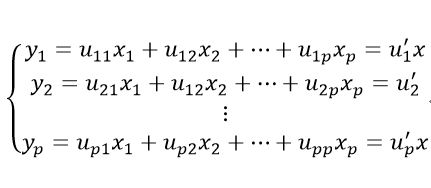

数据规约是指对海量数据进行规约，通过选择替代的、较小的数据使规约后的数据量小很多，但仍接近保持原数据的完整性，使得在规约后的数据集进行分析和挖掘将更有效率。大体上，数据规约可分为属性规约和数值规约。
(一) 属性规约
属性规约通过属性合并来创建新属性维数，或者直接通过删除不相关的属性（维）来减少数据维数，从而提高数据挖掘的效率、降低计算成本。属性规约的目标是寻找出最小的属性子集并确保新的数据子集的概率分布尽可能接近原来数据集的概率分布。其中属性子集的选择的基本方法包括以下几种：
(1) 逐步向前选择：该过程由空属性集作为归约集开始，确定原属性集中最好的属性，并将它添加到规约集中。在其后的每一次迭代步，将剩下的原属性中最好的属性添加到该集合中。
(2) 逐步向后删除：从一个全属性集开始，每次从当前属性子集中选取一个当前最差的属性并将其从当前属性子集中消去。直到无法选出最差属性为止或满足一定阈值结束为止。
以上两种方法可结合在一起，即在每一步选择出一个最好的属性，并在剩余属性中删除一个最差的属性。
(3) 决策树归纳：决策树是一种通过信息增益标准创建树状模型用以解决分类或预测问题的模型，利用决策树的归纳方法对初始数据进行分类归纳学习，获得一个初始决策树，如果没有出现在这个决策树上的属性则可以被认为是无关属性，因此可以将这样的属性从原始数据集中删除，以获得一个较优的子集。
此外，属性规约还可以通过编码机制来减少数据的维数，如：小波变换和主成分分析。
(1) 小波变换
离散小波变换是一种线性信号处理技术，当用于数据向量X时，将它变换成数值上不同的小波系数向量x '.两个向量具
有相同的长度。当这种技术应用于数据规约时，每个元组看作一维数据向量X=(x1,x2,..,),用来描述n个数据库属性在元组上的n个测量值。小波变换后的数据可以截短。仅存放一小部分最强的小波系数，就能保留近似的压缩数据。
(2) 主成分分析
主成分分析法是一种通过构造原始数据的一个正交变换，将许多相关性很高的变量转化为彼此独立或不相关的变量，即使用少数新变量解释原始数据中的大部分变异以达到降维目的的方法。
主成分是观测变量的线性组合，假设xi(i=1,2...p)为原始变量,yi(i=1,2...p) 为主成分，它们之间的的关系如下：

其中，uij为第i个主成分yi与第j个原始变量xj间的线性相关系数，y1，y2，... ... ，yp分别为第一、二...、p主成分，且u11，... ... ，u1p通过与对应的原始变量进行线性组合，使得y1得到最大解释变异的能力，即使得第一主成分的方差最大；接着u21，... ... ，u2p通过与对应的原始变量进行线性组合，使得y2对原始变量中的未被y1解释的变异部分获得最大的解释能力，依次类推，直到p个主成分均求出；通常我们基于对原始变量降维的目的，会从这p个主成分中选取少于p的m个成分，且希望m越小的同时，总的解释能力(累计方差贡献率)能超过80%，值得注意的是:得到的这些主成分彼此之间线性无关.为了便于用户更好的理解，以下将介绍主成分模型中两个统计量意义：
1.贡献率：第i个主成分的方差在全部方差中所在的比重，反映了原来P个指标的信息以及概括能力
2.累计方差贡献率：k个主成分的方差和在全部方差中的所占比重，反映了前k个主成分的综合概括能力。
(二) 数值规约
数值规约是指通过选择替代的、较小的数据来减少数据量，包括有参数方法和无参数方法两类。有参数方法是使用一个模型来评估数据，只需存放参数，而不需要存放实际数据，例如回归和对数线性模型(近似离散属性中的多维概率分布)。无参数方法就需要存放实际数据，例如直方图、抽样、聚类等方法
(1) 直方图
直方图使用分箱来近似数据分布，是一种流行的数据规约形式。属性A的直方图将A的数据分布划分为不相交的子集或桶，
如果每个桶只代表单个属性值/频率对，则该桶称为单桶。通常，桶表示给定属性的一个连续区间。
(2)聚类
聚类技术将数据元组(即记录，数据表中的一行)视为对象。它将对象划分为簇，使一个簇中的对象相互“相似”，而与其
他簇中的对象“相异”。在数据规约中，用数据的簇替换实际数据。该技术的有效性依赖于簇的定义是否符合数据的分布性质。
(3) 抽样
抽样也是一种数据规约技术，它用比原始数据小得多的随机样本(子集)表示原始数据集。假定原始数据集D包含N个元组，可以采用抽样方法对D进行抽样。下面介绍常用的抽样方法：
s个样本无放回简单随机抽样：从D的N个元组中抽取s个样本(s<N),其中D中任意元组被抽取的概率均为1/N，即所有元组的抽取是等可能的。
s个样本有放回简单随机抽样：该方法类似无放回简单随机抽样，不同在于每次一个元组在D中抽取后，记录它，然后放回原处
分层抽样：如果D划分成互不相交的部分，称作层，则通过对每一层的简单随机抽样就可以得到D的分层样本。例如，可以得到关于顾客数据的一个分层样本，按照顾客每个年龄组创建分层。